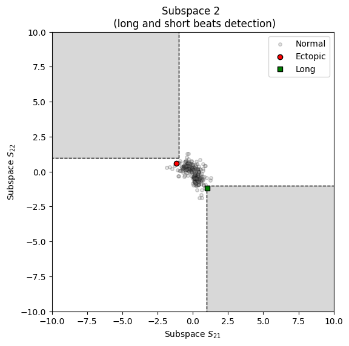

systole.plots.plot_shortlong#
- systole.plots.plot_shortlong(rr: None, artefacts: Dict[str, numpy.ndarray], input_type: str = 'rr_ms') Union[bokeh.plotting.figure.Figure, matplotlib.axes._axes.Axes][source]#
- systole.plots.plot_shortlong(rr: Union[List[float], numpy.ndarray], artefacts: None, input_type: str = 'rr_ms') Union[bokeh.plotting.figure.Figure, matplotlib.axes._axes.Axes]
- systole.plots.plot_shortlong(rr: Union[List[float], numpy.ndarray], artefacts: Dict[str, numpy.ndarray], input_type: str = 'rr_ms') Union[bokeh.plotting.figure.Figure, matplotlib.axes._axes.Axes]
Visualization of short, long, extra and missed intervals detection.
The artefact detection is based on the method described in [1].
- Parameters
- rr
numpy.ndarray| None Interval time-series (R-R, beat-to-beat…), in seconds or in miliseconds.
- artefactsdict | None
The artefacts detected using
systole.detection.rr_artefacts().- input_typestr
The type of input vector. Default is “peaks” (a boolean vector where 1 represents the occurrence of R waves or systolic peaks). Can also be “rr_s” or “rr_ms” for vectors of RR intervals, or interbeat intervals (IBI), expressed in seconds or milliseconds (respectively).
- ax
matplotlib.axes.Axes| None Where to draw the plot. Default is None (create a new figure). Only applies when backend=”matplotlib”.
- backend: str
Select plotting backend {“matplotlib”, “bokeh”}. Defaults to “matplotlib”.
- figsizetuple | int | None
Figure size. Default is (6, 6) for matplotlib backend, and the height is 600 when using bokeh backend.
- rr
- Returns
- plot
matplotlib.axes.Axes|bokeh.plotting.figure.Figure The matplotlib axes, or the boken figure containing the plot.
- plot
See also
Notes
If both rr and artefacts are provided, the function will drop artefacts and re-evaluate given the current RR time-series.
References
- 1
Lipponen, J. A., & Tarvainen, M. P. (2019). A robust algorithm for heart rate variability time series artefact correction using novel beat classification. Journal of Medical Engineering & Technology, 43(3), 173–181. https://doi.org/10.1080/03091902.2019.1640306
Examples
Visualizing short/long and missed/extra intervals from a RR time series.
from systole import import_rr from systole.plots import plot_shortlong # Import PPG recording as numpy array rr = import_rr().rr.to_numpy() plot_shortlong(rr)
<AxesSubplot:title={'center':'Subspace 2 \n (long and short beats detection)'}, xlabel='Subspace $S_{21}$', ylabel='Subspace $S_{22}$'>Visualizing ectopic subspace from the artefact dictionary.
from systole.detection import rr_artefacts # Use the rr_artefacts function to short/long and extra/missed intervals artefacts = rr_artefacts(rr) plot_shortlong(artefacts=artefacts)
<AxesSubplot:title={'center':'Subspace 2 \n (long and short beats detection)'}, xlabel='Subspace $S_{21}$', ylabel='Subspace $S_{22}$'>Using Bokeh as plotting backend.